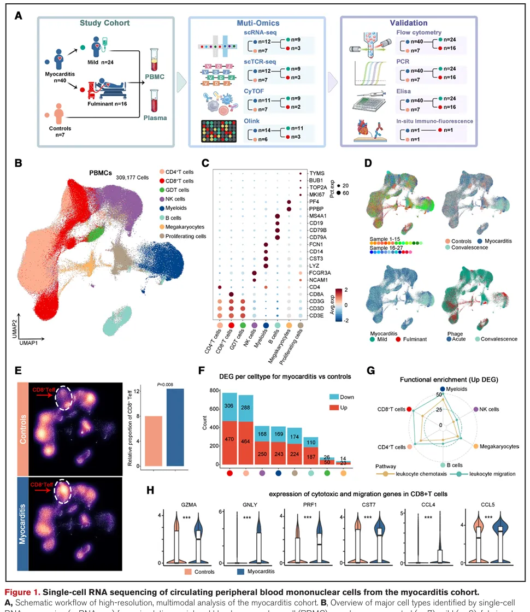
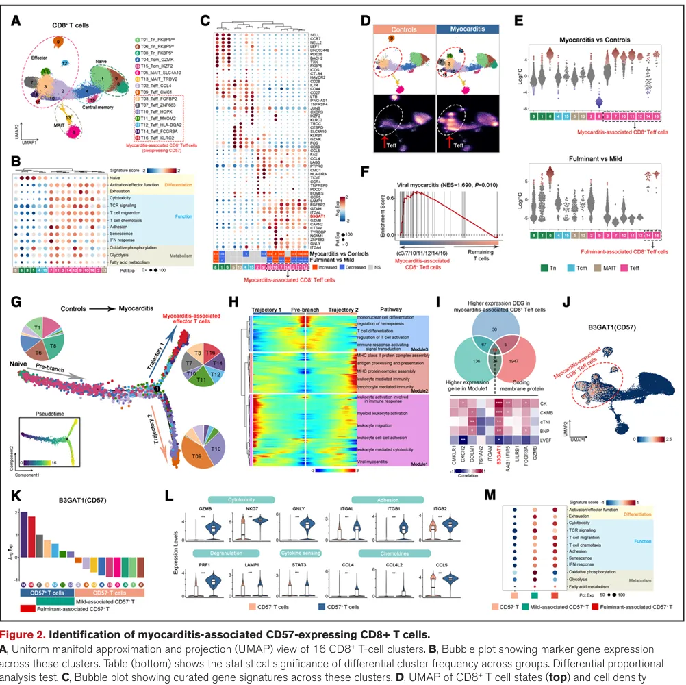
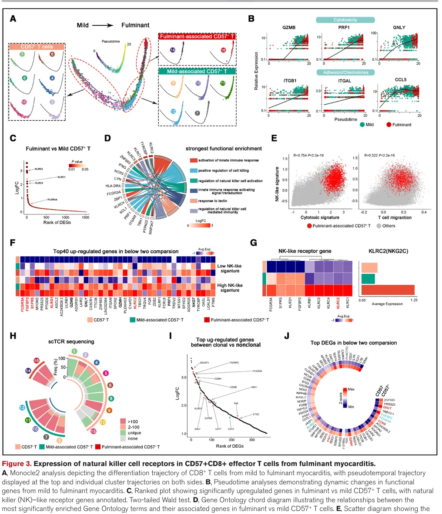
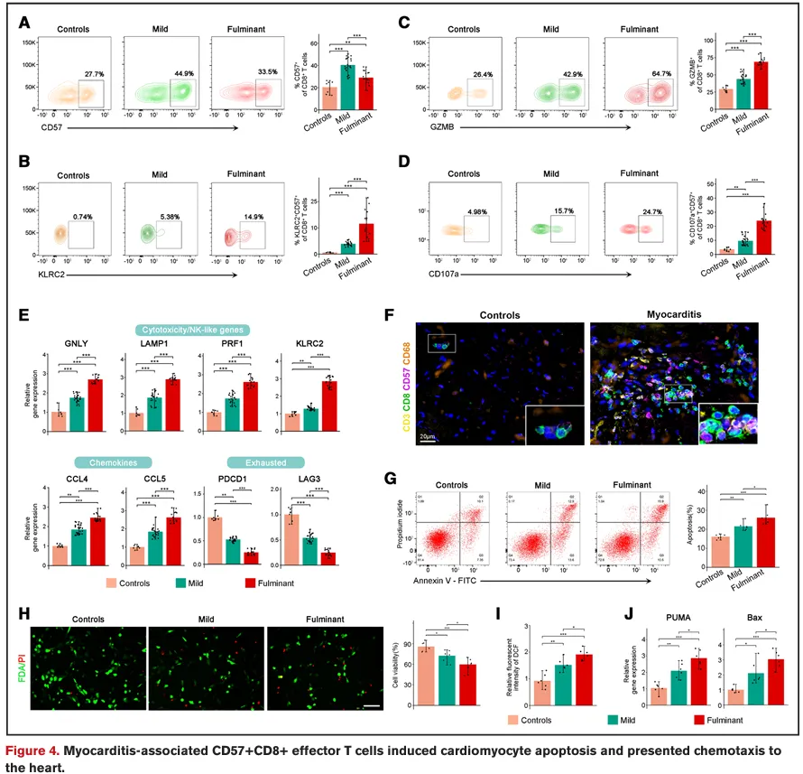
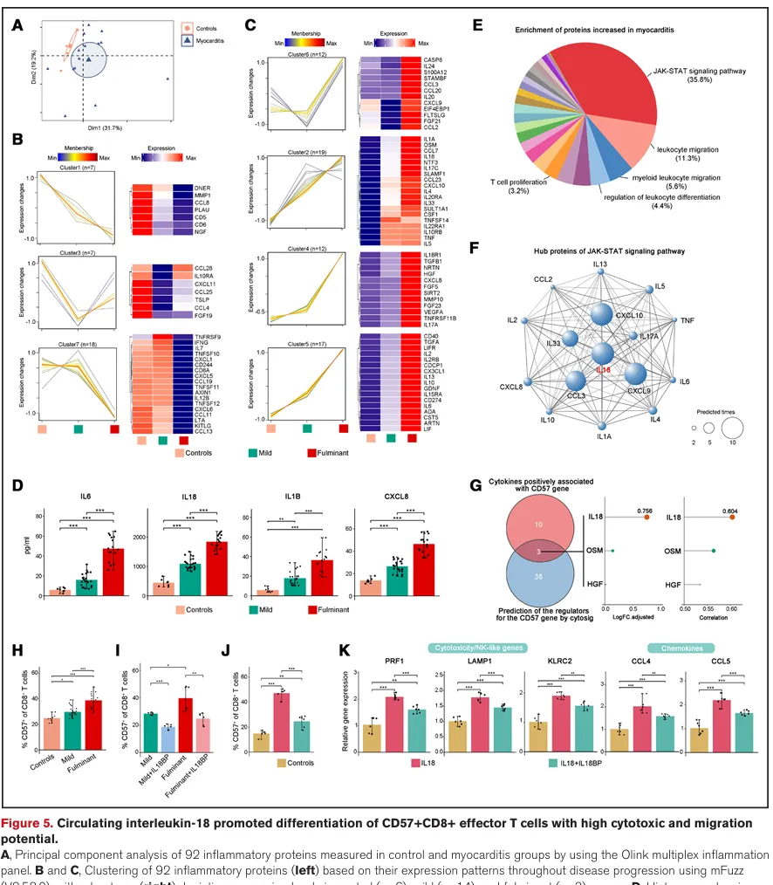
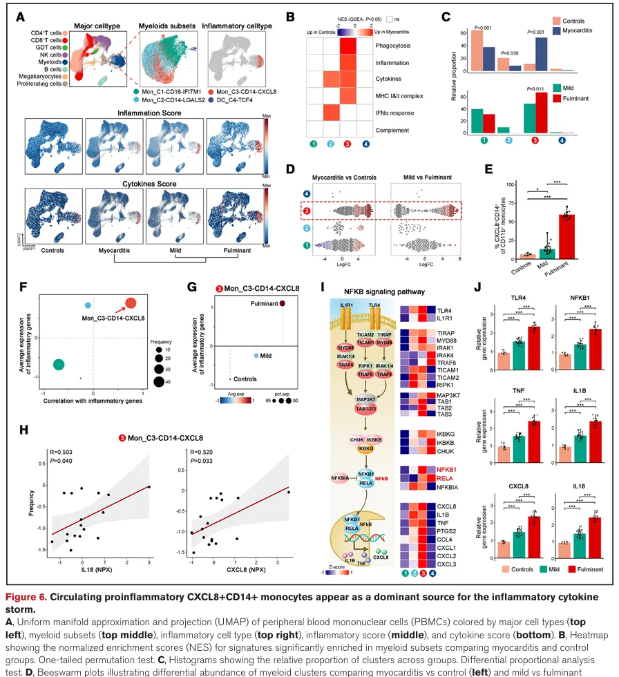
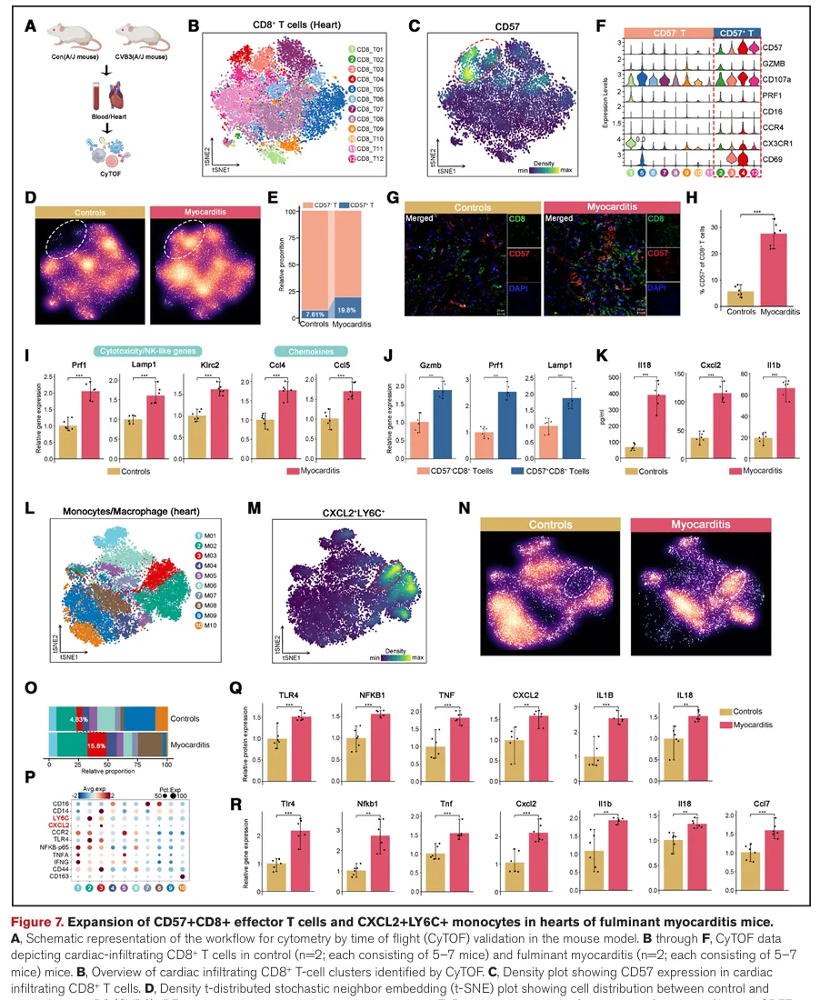
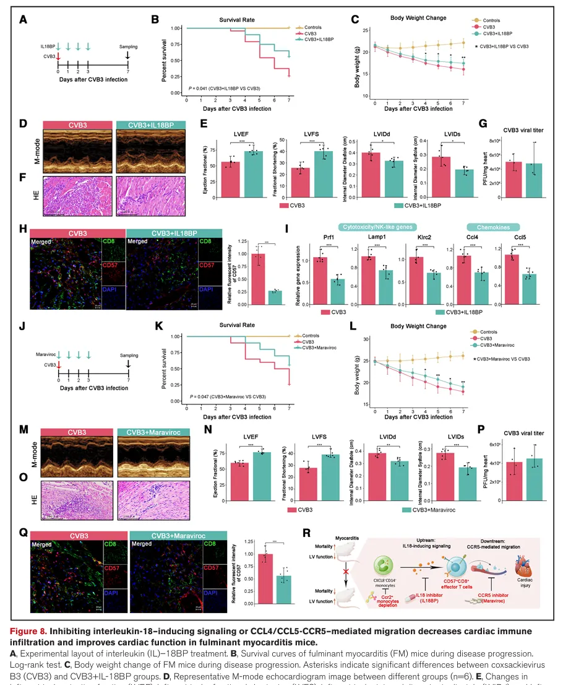

临床问题切入到IF=38.6分文章| 单细胞多组学解析急性心肌炎中的特化CD8+效应T Cell
原文：https://mp.weixin.qq.com/s?__biz=MzAwMzIzOTk5OQ==&mid=2247530929&idx=1&sn=ada1b8732dfc2ec0bbfdbed6c9d90d26&chksm=9b3c00e1ac4b89f761670b07e78a448f6d834d6b6bf8f664cb588c1fee3eb5ce53fcd545d689#rd 合集：文献速递
一、写在前面
今天我们将深入剖析这篇发表在《Circulation》上的急性心肌炎领域研究论文《Single-Cell Multi-Omics Identifies Specialized Cytotoxic and Migratory CD8+ Effector T Cells in Acute Myocarditis》，影响因子38.6。从生信分析到临床意义，我们将全面拆解其学术价值与研究逻辑，尤其关注临床医生如何借助多组学技术发表高分文章，为大家的研究提供思路。该研究团队核心成员来自哈尔滨医科大学附属第二医院心内科。从成员构成看，团队涵盖临床医生（MD）、科研人员（PhD）及技术支撑人员（MS），形成了 “临床问题 - 样本收集 - 多组学实验 - 数据分析 - 功能验证” 的完整研究链条。此次研究延续了团队在 “心血管免疫调控” 方向的研究积累，将单细胞多组学技术与临床疾病机制结合，体现了鲜明的 “临床问题驱动 + 技术创新” 研究特色。DOI: 10.1161/CIRCULATIONAHA.125.073836文章链接：https://pubmed.ncbi.nlm.nih.gov/40762079/
二、研究方法
该研究采用 “临床样本 - 多组学分析 - 功能验证 - 动物模型” 的四层研究设计，是典型的 “临床转化型” 研究范式，具体方法可分为以下四类：
（一）临床样本与分组
- 样本来源 2022 年 12 月 - 2023 年 11 月纳入 40 例急性心肌炎（AM）患者，其中轻症 24 例、暴发性心肌炎（FM）16 例；另设 7 例对照（1 例自主神经功能紊乱、6 例心律失常，无心肌炎症状）。
- subgroup 设计 ：为提高分析分辨率，选取前 15 例 AM 患者（12 例轻症、3 例 FM）作为 “多组学亚组”，先通过单细胞测序、蛋白组学等筛选关键靶点，再在全队列（40 例 AM）中验证，确保结果的可靠性与可重复性。
（二）多组学核心技术
该研究的核心优势在于 “多组学整合分析”，通过不同维度数据交叉验证，确保关键发现的准确性，具体技术如下：
| 技术类型 | 具体方法 | 研究目的 |
|---|---|---|
| 单细胞转录组（scRNA-seq） | 对 PBMCs 进行单细胞 RNA 测序，结合单细胞 T 细胞受体测序（scTCR-seq） | 1. 解析 AM 患者 PBMCs 的细胞亚群构成；2. 追踪 CD8+T 细胞的克隆扩增情况；3. 筛选差异表达基因（DEGs）与关键细胞亚群 |
| 单细胞蛋白组（CyTOF） | 采用抗体 panel 对 PBMCs 进行飞行时间质谱流式分析 | 1. 从蛋白水平验证 scRNA-seq 发现的 CD57+CD8+T 细胞亚群；2. 分析细胞表面标志物（如 CD137、CD49d）的表达，明确细胞活化状态 |
| 靶向蛋白组（Olink） | 检测血浆中 92 种细胞因子 / 趋化因子 | 1. 分析 AM 患者的系统性炎症状态；2. 筛选调控 CD57+CD8+T 细胞分化的关键细胞因子（如 IL-18） |
| 传统分子实验 | 流式细胞术、RT-qPCR、Western blot、Transwell 迁移实验、细胞共培养 | 1. 验证关键细胞亚群的功能（如细胞毒性、迁移能力）；2. 检测关键分子（如 IL-18、CCR5）的表达水平 |
（三）动物模型验证
为进一步验证临床发现的普适性与机制，建立柯萨奇病毒B3（CVB3）诱导的 FM小鼠模型（A/J 小鼠）：
- 模型构建 通过腹腔注射 CVB3，7 天后观察小鼠死亡率、体重变化、心功能（超声心动图）及心肌炎症程度，模拟人类 FM 病理特征。
- 检测内容 采用 CyTOF、免疫荧光、RT-qPCR 等方法，检测小鼠外周血与心肌中 CD57+CD8+T 细胞、CXCL2+LY6C + 单核细胞（小鼠中 CXCL8 的同源分子为 CXCL2）的比例及功能，验证 “单核细胞 - IL-18-CD57+CD8+T 细胞” 轴的作用。
（四）数据分析方法
- 单细胞数据分析 使用Seurat进行细胞聚类与注释，Monocle2进行细胞轨迹分析，CellChat分析细胞间通讯，SCENIC分析转录调控网络；
- 差异分析 2 组比较采用Wilcoxon检验或t检验，3组比较采用单因素方差分析（ANOVA）或 Kruskal-Wallis检验，多重检验校正采用Benjamini-Hochberg法；
- 功能富集分析 使用ClusterProfiler进行GO/KEGG富集分析，GSEA分析基因集富集趋势；
- 多组学整合 通过无偏倚跨组学整合（如scRNA-seq与CyTOF数据的共聚类分析），确保不同维度数据的一致性。
三、研究结果
该研究结果逻辑清晰，从 “细胞亚群发现 - 功能验证 - 调控机制 - 动物模型验证 - 治疗潜力” 层层递进，每一张图片都围绕核心科学问题展开，我们按结果顺序逐一解析：
● Figure 1: scRNA-seq揭示AM中免疫细胞图谱
1. 分析思路
对15例AM患者（12 例轻症、3 例 FM）和7例对照的PBMC进行scRNA-seq，质控后获得309177个高质量细胞，通过细胞谱系特异性基因 （如CD3E 标记T细胞、CD14标记单核细胞、CD19标记B细胞）定义7大细胞类型，再通过差异表达分析（DEG）、富集分析（GO/KEGG）比较疾病组与对照组的细胞组成和转录特征。
2. 结论 ：CD8+ T细胞在心肌炎中比例升高，表达细胞毒性/迁移相关基因上调。

Figure 1
● Figure 2: CD57+CD8+ T细胞的鉴定与特征
1. 分析思路
对 CD8+T 细胞进行亚聚类（排除 NK 细胞干扰），获得 16 个亚群；通过轨迹分析（Monocle2） 解析CD8 +T细胞从对照到AM的分化路径；结合基因集富集分析（GSEA）、标志物筛选（膜蛋白基因 + 心肌损伤标志物相关性分析），定位关键致病性亚群；最后通过scTCR-seq分析该亚群的克隆扩增特征。
2. 结论 ：CD57+ T细胞具有高细胞毒性和迁移能力，且在FM中富集。

Figure2
● Figure 3: NK样受体在FM中高表达
1. 分析思路
通过差异转录组分析 比较轻症与 FM 的 CD57+CD8+T 细胞，筛选关键差异基因；结合scTCR-seq数据，分析 CD57 + 亚群的克隆扩增程度（克隆大小 > 100 定义为大克隆）；通过相关性分析验证 NK 样受体表达与细胞毒性 / 迁移能力的关联。
2. 结果 ：FM中CD57+ T细胞高表达KLRC2等NK受体，且克隆扩增显著。

Figure 3
● Figure 4: 功能验证——细胞毒性、迁移与心肌细胞凋亡
1. 分析思路
通过流式细胞术 验证外周血中 CD57+CD8+T 细胞的比例与功能（如 GZMB、CD107a 表达）；通过Transwell 实验 检测其迁移能力；通过 “CD8+T 细胞 - AC16 心肌细胞共培养” 实验，结合 Annexin V/PI 染色、FDA/PI 染色、活性氧（ROS）检测、凋亡基因（Bax、PUMA）定量，验证其对心肌细胞的直接毒性；通过心脏活检组织免疫荧光染色，确认 CD57+CD8+T 细胞在心肌组织中的浸润。
2. 结论 ：CD57+CD8+ T细胞可诱导心肌细胞凋亡，迁移能力强。

Figure 4
● Figure 5: IL-18促进CD57+CD8+ T细胞分化
1. 分析方法
通过Olink蛋白质组学检测对照组、轻症 AM 组、FM 组血浆中 92 种细胞因子表达，结合 PCA 分析炎症谱差异；利用 ClueGO 富集差异细胞因子通路，PPI 网络筛选核心枢纽分子；再通过体外实验验证关键因子 —— 将健康人 CD3+T 细胞与不同血清共培养，或加入重组 IL-18/IL-18 中和抗体，用流式和qPCR检测 CD57+CD8+T 细胞比例及功能基因表达。
2.结论：该图明确了 CD57+CD8 + 效应 T 细胞的上游关键调控因子 —— 循环 IL-18，建立了 “系统性炎症因子→致病 T 细胞分化” 的关联，为后续追溯 IL-18 的来源、完善致病通路提供了核心线索。

Figure 5
● Figure 6: CXCL8+CD14+单核细胞是IL-18主要来源
1. 分析方法
为寻找 IL-18 的主要分泌细胞，研究首先基于 scRNA-seq 数据计算各细胞类型的 “炎症评分” 与 “细胞因子评分”，筛选高炎症特征的细胞群体；对髓系细胞（单核细胞、树突状细胞）进行亚聚类，结合差异比例分析和 marker 基因（如 CD14、CXCL8）鉴定 AM（尤其 FM）中特异性扩增的髓系亚群；采用流式细胞术验证 CXCL8+CD14 + 单核细胞在各组的比例，通过相关性分析确认该亚群与血浆 IL-18 水平的关联；利用 SCENIC 分析筛选调控该亚群活化的关键转录因子（如 NF-κB），并通过 qPCR 验证相关通路基因表达。
2. 结论：该图明确了 IL-18 的主要来源 ——CXCL8+CD14 + 促炎单核细胞，至此完整构建 “CXCL8+CD14 + 单核细胞→IL-18→CD57+CD8 + 效应 T 细胞” 的核心致病轴，为后续干预靶点的选择提供了完整逻辑链。

Figure 6**
**
● Figure 7–8: 小鼠模型验证与治疗干预
1. 分析方法
为验证人类 AM 致病轴在动物模型中的保守性，研究建立柯萨奇病毒 B3（CVB3）诱导的 FM 小鼠模型（A/J 小鼠），通过体重变化、生存率、心脏超声、HE 染色验证模型是否模拟人类 FM 病理特征（如心肌炎症、心室功能障碍）；采用 CyTOF 技术（T 细胞和髓系细胞抗体 panel）分析小鼠外周血和心脏中免疫细胞亚群，重点检测 “CD57+CD8+T 细胞” 和 “CXCL2+LY6C + 单核细胞”（小鼠中 CXCL2 为人类 CXCL8 的同源分子）的比例；通过免疫荧光验证这些细胞在小鼠心脏的浸润，qPCR 检测心脏中 “细胞毒性 - 迁移” 相关基因表达；比较小鼠其他心脏疾病（心肌梗死、心力衰竭）中 CD57+CD8+T 细胞的存在情况，确认其疾病特异性。
在 CVB3 诱导的 FM 小鼠模型中，分别干预致病轴的三个关键节点：1）用 IL-18BP 阻断 IL-18 信号；2）用 Maraviroc（CCR5 抑制剂）阻断 CD57+CD8+T 细胞向心脏的迁移（基于前文 CCL4/CCL5-CCR5 为迁移关键通路）；3）用 CCR2-/- 小鼠（CCR2 为促炎单核细胞迁移关键受体） depletion CXCL8+CD14 + 同源单核细胞。通过生存率、体重变化、心脏超声（LVEF、LVFS 等指标）评估心脏功能，HE 染色、免疫荧光评估心肌炎症浸润，qPCR 检测 “细胞毒性 - 迁移” 相关基因表达，同时检测心脏 CVB3 病毒滴度以排除 “抗病毒作用干扰治疗效果” 的可能。
2. 结论：该图在动物模型中验证了人类 AM 的核心致病轴，证明 “CXCL2+LY6C + 单核细胞→IL-18→CD57+CD8+T 细胞” 通路在物种间保守，同时排除该细胞亚群在其他心脏疾病中的存在，进一步确认其对 AM（尤其 FM）的特异性，为后续干预实验提供可靠模型基础。结合 8K-8Q 的完整结果，Maraviroc 通过阻断 CCR5，有效减少了 CD57+CD8+T 细胞向心脏的浸润，降低心肌炎症反应，最终改善 FM 小鼠的生存率和心脏功能，且不影响病毒清除，进一步验证了 “CCR5 介导的迁移” 是致病轴的关键环节，为临床开发针对 CCR5 的 AM 治疗药物提供了直接的动物实验证据。

Figure 7
Figure 8四、最后聊聊
对于生物信息学的学生来说，理解临床合作者的思维模式至关重要。这篇文章是一个完美的范本，展示了临床医生如何利用生信技术解决核心临床问题，并最终走向顶刊。
1. 选题：直击临床“痛点”与“盲点”
-
痛点 (Clinical Need) ：暴发性心肌炎（FM）死亡率极高，但治疗手段匮乏（只有非特异性的免疫抑制）。这是一个明确的、未满足的临床需求。
-
盲点 (Knowledge Gap) ：虽然知道免疫系统过度激活是核心，但具体是哪些免疫细胞亚型、通过什么机制导致心肌损伤，完全是个“黑箱”。传统的流式细胞术或组织染色无法回答这个问题。
-
启发 ：高分文章始于一个重要的、悬而未决的临床问题。不要做“为了测序而测序”的研究。你的生信分析必须服务于一个明确的临床故事。
2. 策略：前沿技术赋能临床样本，多组学交叉验证
-
技术选型 ：他们没有停留在常规PCR或流式，而是直接采用最前沿的单细胞多组学 技术（scRNA-seq, scTCR-seq, CyTOF, Olink）对临床样本进行“降维打击”。这能发现前所未有的新细胞亚群和机制。
-
样本策略 ：精心设计了临床队列 （轻症 vs. 爆发性 vs. 恢复期 vs. 对照），这使得所有发现都能与疾病严重程度和进程关联，极大地提升了临床相关性。
-
验证闭环 ：
-
发现 (Discovery) ：用scRNA-seq在人群中发现CD57+CD8+ T细胞。
-
验证 (Validation) ：用CyTOF在蛋白水平验证该群体存在。
-
功能 (Function) ：用体外实验证明其细胞毒性和迁移能力。
-
机制 (Mechanism) ：用Olink找到上游信号IL-18，并用体外实验验证。
-
模型 (Model) ：在小鼠模型中重现表型，并进行干预（IL-18BP, Maraviroc）验证靶点。
-
-
启发 ：单一组学或单一技术的研究很难发顶刊。“生信初步发现 → 多组学交叉验证 → 体内外功能实验 → 动物模型干预” 是发高分文章的黄金套路。
3. 叙事：讲一个完整、深刻且直观的科学故事
这篇文章的逻辑链条非常清晰有力，形成了一个完美的“故事闭环”：
谁在捣乱？ (CD57+CD8+ T细胞) → 它有什么坏本事？ (高细胞毒性、高迁移) → 它是怎么来的？ (由IL-18诱导分化) → 谁指使的？ (CXCL8+CD14+单核细胞是IL-18的主要来源) → 怎么证明它是坏蛋？ (在心脏浸润、诱导凋亡、克隆扩增) → 能干掉它吗？ (阻断IL-18或CCR5，能改善小鼠病情)
- 启发 ：所有图片和分析结果都应该为主线故事服务。每一张图都是故事的一个章节，逻辑递进，环环相扣。
参考文献
Tong Z, Yan X, Chen T, Song W, Su D, Wang N, Zhang Y, Kong Y, Wang D, Wang P, Chen Y, Wang X, Cui J, Sui J, Liu S, Li Y, Yang Q, Zheng Z, Jin Z, Li Y, Liu F, Li J, Qi L, Deng J, Li Z, Yang S, Jia H, Ji Y, Zhang M, Yu B. Single-Cell Multi-Omics Identifies Specialized Cytotoxic and Migratory CD8+ Effector T Cells in Acute Myocarditis. Circulation. 2025 Aug 5.

如何联系我们

 留一个领取资料、开箱即用的单细胞分析镜像的微信号[Biomamba_zhushou]，方便各位随时交流。同时我们也构建了交流群矩阵，欢迎大家入群讨论。
大家可以阅读完这几篇之后添加给生信入门初学者的小贴士
没有检索，就没有发言权
留一个领取资料、开箱即用的单细胞分析镜像的微信号[Biomamba_zhushou]，方便各位随时交流。同时我们也构建了交流群矩阵，欢迎大家入群讨论。
大家可以阅读完这几篇之后添加给生信入门初学者的小贴士
没有检索，就没有发言权
已有生信基地联系方式的同学无需重复添加

 您点的每个赞和在看，我都认真当成了喜欢
您点的每个赞和在看，我都认真当成了喜欢